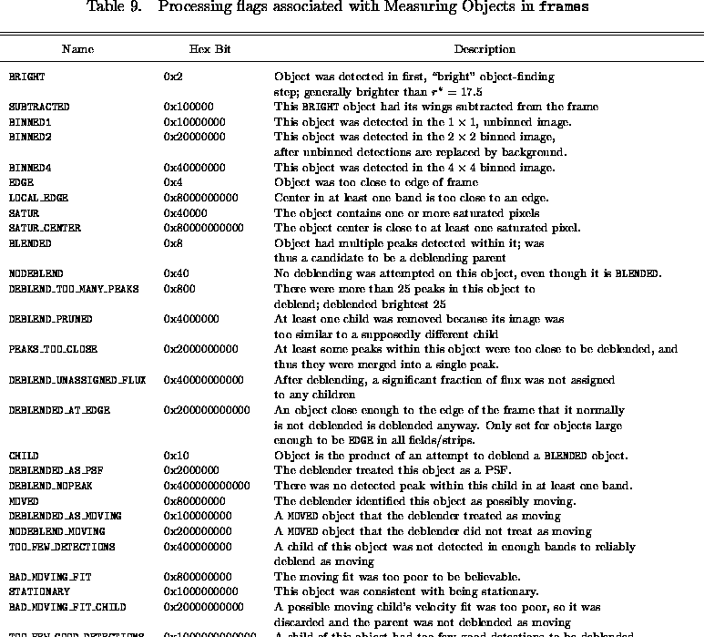

Next: About this document
Up: Sloan Digital Sky Survey:
Previous: Beyond the Early Data
References
- Anderson et al.(2001)
-
Anderson, S. et al. 2001, , 122, 503
- Bahcall & Soneira(1980)
-
Bahcall, J. N. & Soneira, R. M. 1980, , 44, 73
- Becker, White, & Helfand(1995)
-
Becker, R. H., White, R. L., & Helfand, D. J. 1995, , 450, 559
- Blanton et al.(2001a)
-
Blanton, M. R., Dalcanton, J., Eisenstein, D. et al. 2001a,
AJ, 121, 2358
- Blanton et al.(2001b)
-
Blanton, M.R., Lupton, R.H., Maley, F.M., Young, N., Zehavi, I.,
& Loveday, J. 2001b, AJ, submitted (astro-ph/0105535)
- Brodie & Hanes(1986)
-
Brodie, J. P. & Hanes, D. A. 1986, , 300, 258
- Calabretta & Greisen(2001)
-
Calabretta, M. & Greisen, E.W., 2001, in preparation
- Chen et al.(2001)
-
Chen, B., et al. 2001, ApJ, 553, 184
- Connolly et al.(1995a)
-
Connolly, A. J., Szalay, A. S., Bershady, M. A., Kinney, A. L.,
& Calzetti, D. 1995a, , 110, 1071
- Connolly et al.(1995)
-
Connolly, A. J., Csabai, I., Szalay, A. S., Koo, D. C., Kron, R. G.,
& Munn, J. A. 1995b, , 110, 2655
- Connolly & Szalay(1999)
-
Connolly, A.J., & Szalay, A.S. 1999, AJ, 117, 2052
- Croom et al.(2001)
-
Croom, S.M., Smith, R.J., Boyle, B.J. et al. 2001, MNRAS, 322, L29
- Delaney(2001)
-
Delaney, K. 2000, Inside Microsoft SQL Server 2000 (Microsoft Press)
- Diaz, Terlevich, & Terlevich(1989)
-
Diaz, A. I., Terlevich, E., & Terlevich, R. 1989, , 239, 325
- Eisenstein et al.(2001)
-
Eisenstein, D., et al. 2001, AJ, in press (astro-ph/0108153)
- Fan(1999)
-
Fan, X. 1999, , 117, 2528
- Fan et al.(1999)
-
Fan, X., Strauss, M. A., Schneider, D. P., et al. 1999, , 118, 1
- Fan et al.(2001a)
-
Fan, X., Strauss, M. A., Richards, G. T., et al. 2001a, , 121, 31
- Fan et al.(2001b)
-
Fan, X., Narayanan, V., Lupton, R.H., et al. 2001b, ,
in press (astro-ph/0108063)
- Finlator et al.(2000)
-
Finlator, K., Ivezic, Z., Fan, X., et al. 2000, , 120, 2615
- Fischer et al.(2000)
-
Fischer, P., McKay, T., Sheldon, E., et al. 2000, , 120, 1198
- Fukugita et al.(1996)
-
Fukugita, M., Ichikawa, T., Gunn, J. E., Doi, M., Shimasaku, K., &
Schneider, D.P. 1996, , 111, 1748
- Gunn et al.(1998)
-
Gunn, J. E., Carr, M., Rockosi, C. et al. 1998, , 116, 3040
- Hogg et al.(2001)
-
Hogg, D. W., Schlegel, D., Finkbeiner, D. P., & Gunn, J. E.
2001, AJ, in press (astro-ph/0106511)
- Høg et al.(2000)
-
Høg, E., Fabricius, C., Makarov, V. V., Urban, S., Corbin, T.,
Wycoff, G., Bastian, U. Schwekendiek, P., & Wicenec, A. 2000,
, 355, L27
- Ivezic et al.(2000)
-
Ivezic, Z., Goldston, J., Finlator, K., et al. 2000, , 120, 963
- Ivezic et al.(2001)
-
Ivezic, Z., et al. 2001, AJ, in press (astro-ph/0105511)
- Katgert(2001)
-
Katgert, P. 2001, private communication
- Kunszt et al.(2000)
-
Kunszt, P., Szalay, A.S., Csabai, I., & Thakar, A. 2000,
in Proc ADASS IX, eds. N. Manset, C.Veillet, D. Crabtree,
(ASP Conference Series), 216, 141
- Leggett et al.(2000)
-
Leggett, S. et al. 2000, ApJ, 536, L35
- Lupton et al.(2001c)
-
Lupton, R., Gunn, J. E., Ivezic, Z., Knapp, G. R., Kent, S.,
& Yasuda, N. 2001,
in ASP Conf. Ser. 238, Astronomical Data Analysis Software and
Systems X, ed. F. R. Harnden, Jr., F. A. Primini, and H. E. Payne (San
Francisco: Astr. Soc. Pac.), in press (astro-ph/0101420)
- Lupton et al.(2001a)
-
Lupton, R., et al. 2001a, in preparation
- Lupton et al.(2001b)
-
Lupton, R., et al. 2001b, in preparation
- Lupton et al.(1999)
-
Lupton, R. H., Gunn, J. E., & Szalay, A. S. 1999, , 118 1406
- Menou et al.(2001)
-
Menou, K., Vanden Berk, D.E., Ivezic, Z. et al. 2001, AJ, in press
(astro-ph/0102410)
- Monet(1998)
-
Monet, D.G. 1998, BAAS, 19312003
- Newberg & Yanny(1997)
-
Newberg, H.J., & Yanny, B. 1997, , 113, 89
- Objectivity Inc.(2001)
-
Objectivity Database Reference Manual, Objectivity Inc., Menlo Park, CA
- Petravick et al.(1994)
-
Petravick, D., Berman, E., MacKinnon, B., et al. 1994, SPIE, 2198, 935
- Petrosian(1976)
-
Petrosian, V. 1976, , 209, L1
- Pickles(1998)
-
Pickles, A. 1998, PASP, 110, 863
- Pogson(1856)
-
Pogson, N. R. 1856, , 17, 12
- Postman & Lauer(1995)
-
Postman, M., & Lauer, T.R. 1995, ApJ, 440, 28
- Richards et al.(2001a)
-
Richards, G.T., Fan, X., Schneider, D.P. et al. 2001a, AJ,
121, 2308
- Richards et al.(2001b)
-
Richards, G.T., et al. 2001b, in preparation
- Rybicki & Press(1992)
-
Rybicki, G.B. & Press, W.H. 1992, ApJ, 398, 169
- Schlegel, Finkbeiner, & Davis(1998)
-
Schlegel, D., Finkbeiner, D., & Davis, M. 1998, ApJ, 500, 525
- Schneider et al.(2001)
-
Schneider, D.P. et al. 2001, AJ, submitted
- Scranton et al.(2001)
-
Scranton, R., et al. 2001, ApJ, submitted (astro-ph/0107416)
- Shectman et al.(1996)
-
Shectman, S.A., Landy, S.D., Oemler, A., Tucker, D.L., Lin,
H., Kirshner, R.P., & Schechter, P.L. 1996, ApJ, 470, 172
- Sheldon et al.(2001)
-
Sheldon, E. et al. 2001, ApJ, 554, 881
- Shimasaku et al.(2001)
-
Shimasaku, K. et al. 2001, AJ, in press (astro-ph/0105401)
- Smith et al.(2001)
-
Smith, J. A., Tucker, D. L., Kent, S., et al. 2001, in preparation
- Stark et al.(1997)
-
Stark, J., Siebenmorgen, R., & Gredel, R. 1997, , 482, 1011
- Strateva et al.(2001)
-
Strateva, I. et al. 2001, AJ, in press (astro-ph/0107201)
- Strauss et al.(2001)
-
Strauss, M.A. et al. 2001, in preparation
- Szalay et al.(2001)
-
Szalay, A.S., Gray, J., Kunszt, P., Thakar, A., and Slutz, D. 2001, in Proceedings of MPA/MPE/ESO
Conference ``Mining the Sky'', Garching,
Germany
- Tonry & Davis(1979)
-
Tonry, J., & Davis, M. 1979, , 84, 1511
- Thakar et al.(2000)
-
Thakar,A., Kunszt, P.Z., Szalay, A.S. and Szokoly, G.P. 2001,
Multi-threaded Query Agent and Engine for a Very Large
Astronomical Database, in Proc ADASS IX, eds. N. Manset,
C. Veillet, D. Crabtree, ASP Conference series, 216,
231
- Trager et al.(1998)
-
Trager, S. C., Worthey, G., Faber, S. M., Burstein, D., & Gonzalez, J. J. 1998,
, 116, 1
- Tucker et al.(2001)
-
Tucker, D. L. et al. 2001, in preparation
- Vanden Berk et al.(2001)
-
Vanden Berk, D., et al. 2001, AJ, 122, 549
- Voges et al.(1999)
-
Voges, W., Aschenbach, B., Boller, Th., et al. 1999, , 349, 389
- Waddell et al.(1998)
-
Waddell, P. Mannery, E. J., Gunn, J. E., & Kent, S. M. 1998,
SPIE, 3352, 742
- Yanny et al.(2000)
-
Yanny, B., Newberg, H. J., Kent, S., et al. 2000, , 540, 825
- Yasuda et al.(2001)
-
Yasuda, N., Fukugita, M., Narayanan, V. et al. 2001, AJ, 122, 1104
- York et al.(2000)
-
York, D. G., Adelman, J., Anderson, J. E., et al. 2000, , 120, 1579
- York et al.(2001)
-
York, D. G. et al. 2001, in preparation
- Zacharias et al.(2000)
-
Zacharias, N., Urban, S. E., Zacharias, M. I., et al. 2000, , 120, 2131
- Zehavi et al.(2001)
-
Zehavi, I., Blanton, M.R., Frieman, J.A. et al. 2001, ,
submitted (astro-ph/0106476)




Figure 1:
Imaging Sky Coverage for the SDSS EDR. A box defined by raMin,
raMax, decMin, and decMax
is filled in for each Field object.
Figure 2:
Spectroscopy Sky Coverage for the SDSS EDR. A circle defined by ra,
dec and a diameter of is filled in for each Plate object.
Figure 3: Overview of data products and distribution for SDSS EDR.
The left column contains all of the data products available.
The second column contains the servers that hold data. Note that not
all data products are contained in each of the servers. The third
column contains the interfaces we provide to these servers. Choose
which interface to use based on the results you wish to obtain,
listed in the fourth column.

Figure 4: Preliminary 2.5-m telescope filter responses, in u, g, r,
i, and z.
The upper curve in each case is the filter reponse including the
quantum efficiency of the CCD and the reflectivity of the primary and
secondary, ignoring the atmosphere, and the lower curve assumes an
airmass of 1.3. Scattering within the thin chips affects the r and
i band; this has no effect on extended objects, and the
corresponding response curve is given by the dashed line in these two
cases.
Figure 5: Quantum efficiency of atmosphere/telescope/fiber/spectrograph
combination for each of the four spectroscopic chips, as measured from
F stars with calibrated photometry.
Figure 6: Typical astrometric residuals, comparing positions between
the astrometric and photometric chips for objects in common. The line
going through the points is a spline fit to these residuals,
attempting to remove atmospheric fluctuations.
Figure 7: The width of the PSF is a strong function of position in the
imaging camera, even on the scale of a single CCD. Each square
represents one of the photometric CCDs. The colors
indicate the PSF width across the camera at a single moment of
relatively poor seeing; the variations are due to time variability
during the 55 second integration, plus effects in the telescope
optics. The stretch is linear, from 1.4 to
2 arcsec.
Figure 8: The seeing (psfWidth) measured in the r filter in
each of the imaging runs in the six camera columns, as a function of
field number (lower axis) and  (upper axis). A symbol for
each field along the bottom indicates the quality of each field:
Acceptable, Good, or Hole. Vertical marks indicate
the location of MT secondary patches used for photometric calibration.
(upper axis). A symbol for
each field along the bottom indicates the quality of each field:
Acceptable, Good, or Hole. Vertical marks indicate
the location of MT secondary patches used for photometric calibration.
Figure 9: The aperture magnitude correction (apCorrRunErr) for
the five filters, in each of the imaging runs in the six camera columns, as a
function of field number (lower axis) and (upper axis). Vertical
marks indicate the location of MT secondary patches used for photometric
calibration.
Figure 10: Zeropoint deviations as a function of 2.5m
CCD column. This plot contains data from comparisons of 22,972 stars
from runs 752 and 756 between the PT and 2.5m telescopes and shows the
2.5m magnitude - PT magnitude (which is equal to the zeropoint
determined from each star). Scattered light creates deviations as great
as 10% in the u band in columns 1 and 6.
Figure 11:
In runs 752 and 756, for objects that are measured in each run in the
overlap region of camera column 3, we show the difference of magnitude
as a function of field number. We inspect the complete set of these
plots, six camera columns for each pair of overlapping runs. This set
is typical, showing RMS scatter of 0.02 mag in  ,
,  ,
,  , and
0.03 mag in
, and
0.03 mag in  and
and  .
.
Figure 12:
Location of the break in the stellar locus between K and M stars
in the color-color diagrams, for runs 752 and 756 of the EDR.
Figure 13: Color-color plots of
quasars and stars as measured in the SDSS colors. Black contours and
black dots are stellar sources. Red contours and red dots show the
distribution of quasars in the EDR data.
Figure 14: Redshift histogram for spectra classified as galaxies.

Figure 15: Pie diagram of main galaxies and LRGs with spectra in
the EDR. The annuli are labeled with the comoving distance, assuming
, , and .
Figure 16: Redshift histogram for spectra classified as quasars.
Figure 17: Pie diagram of quasars in the EDR.
The annuli are labeled with the comoving distance, assuming
, , and .
Next: About this document
Up: Sloan Digital Sky Survey:
Previous: Beyond the Early Data
Michael Strauss
Thu Jan 30 11:15:34 EST 2003